“দ্রোহ এনেছে বিজয়” — বিজয়ের চেতনার মঞ্চ
অন্যস্বর টরন্টো প্রতি বছর “দ্রোহ এনেছে বিজয়” আয়োজনের মাধ্যমে টরন্টো, উত্তর আমেরিকা ও বাংলাদেশের সাংস্কৃতিক ব্যক্তিত্ব এবং নিজস্ব শিল্পীদের অংশগ্রহণে ধারাবাহিক বিজয় উৎসব উদযাপন করে আসছে।
বাংলা ভাষা, শিল্প ও মানুষের মেলবন্ধন
কবিতা, গান, নাটক, আলোচনা ও নতুন প্রজন্মের অংশগ্রহণে আমরা গড়ে তুলছি এক প্রাণবন্ত বাংলা সাংস্কৃতিক পরিসর।
২০১৪ সালে “লক্ষ্য, বাচনিক উৎকর্ষ” এই মন্ত্রকে ধারণ করে প্রতিষ্ঠিত হয় অন্যস্বর টরন্টো। প্রবাসে বাংলা ভাষা, বাঙালি কৃষ্টি ও সুস্থ সাংস্কৃতিক চর্চাকে সমৃদ্ধ ও বেগবান করার প্রত্যয়ে সংগঠনটি নিরলসভাবে কাজ করে যাচ্ছে।
অন্যস্বর টরন্টো বাংলা ভাষাভাষী মানুষদের জন্য একটি অন্তর্ভুক্তিমূলক সাংস্কৃতিক উদ্যোগ। এখানে শিল্পী, লেখক, পাঠক, শ্রোতা, পরিবার এবং তরুণ প্রজন্ম একই মঞ্চে নিজেদের গল্প, স্মৃতি ও সৃজনশীলতা ভাগ করে নেয়। সংস্কৃতির মাধ্যমে প্রজন্মের সঙ্গে প্রজন্মের সংযোগ তৈরি করাই আমাদের অন্যতম লক্ষ্য।
বর্তমানে ৩০-এর অধিক সদস্য নিয়ে সমৃদ্ধ অন্যস্বর টরন্টো গ্রেটার টরন্টো এলাকার বাংলা ভাষাভাষী কমিউনিটির জন্য নিয়মিতভাবে সফল আবৃত্তি ও সাংস্কৃতিক আয়োজন উপহার দিয়ে চলেছে। প্রতিবছরের ধারাবাহিকতায় সংগঠনটি বিজয় দিবস উপলক্ষে টানা একাধিক দিনের বিশেষ আয়োজন করে থাকে—যার মধ্যে গত কয়েক বছর ধরে টানা ১২ দিনব্যাপী অনুষ্ঠান বিশেষভাবে প্রশংসিত হয়েছে। এছাড়াও সম্প্রতি অনুষ্ঠিত বৈশাখী আয়োজন দেশ ও বিদেশে দর্শক-শ্রোতাদের ব্যাপক প্রশংসা অর্জন করেছে।
অন্যস্বর টরন্টো সারা বছরজুড়ে আবৃত্তি কর্মশালা, গুণীজন সংবর্ধনা, বিষয়ভিত্তিক অনুষ্ঠান এবং জাতীয় দিবস কেন্দ্রিক নানা সাংস্কৃতিক আয়োজন পরিচালনা করে থাকে।
উল্লেখ্য, অন্যস্বর টরন্টো হলো নাট্য সংগঠন অন্যথিয়েটার টরন্টো-এর একটি অঙ্গ সংগঠন।
বৃহৎ সাংস্কৃতিক অনুষ্ঠান কিংবা ছোট পরিসরের পাঠচক্র —প্রতিটি উদ্যোগের মধ্য দিয়েই অন্যস্বর টরন্টো বাংলা সংস্কৃতিকে জীবন্ত, অংশগ্রহণমূলক ও আগামী প্রজন্মের কাছে অর্থবহ করে তুলতে কাজ করে যাচ্ছে।
অন্যস্বর টরন্টো প্রতি বছর “দ্রোহ এনেছে বিজয়” আয়োজনের মাধ্যমে টরন্টো, উত্তর আমেরিকা ও বাংলাদেশের সাংস্কৃতিক ব্যক্তিত্ব এবং নিজস্ব শিল্পীদের অংশগ্রহণে ধারাবাহিক বিজয় উৎসব উদযাপন করে আসছে।
বাংলা সাহিত্যের প্রখ্যাত কবিদের জন্মবার্ষিকী উপলক্ষে অন্যস্বর টরন্টো সারা বছরজুড়ে বিশেষ আবৃত্তি ও সাংস্কৃতিক আয়োজনের মাধ্যমে তাঁদের সাহিত্য ও সৃষ্টিকে শ্রদ্ধাভরে স্মরণ করে।
প্রতি বছর আয়োজিত “বৈশাখের পঙ্ক্তিমালা” অনুষ্ঠানে নতুন প্রজন্ম, শিশু এবং অন্যস্বর টরন্টোর নিজস্ব শিল্পীদের প্রাণবন্ত পরিবেশনায় উদযাপিত হয় বাংলা সংস্কৃতি ও বৈশাখের আবহ।
শুদ্ধ উচ্চারণ, বাচনভঙ্গি, অনুভূতির প্রকাশ ও মঞ্চ উপস্থাপনার দক্ষতা বিকাশের লক্ষ্যে অন্যস্বর টরন্টো নিয়মিত আবৃত্তি কর্মশালার আয়োজন করে থাকে। নতুন ও অভিজ্ঞ—উভয় আবৃত্তিশিল্পীদের জন্যই এই কর্মশালা উন্মুক্ত।
বাংলা ভাষা, সাহিত্য, সংস্কৃতি ও শিল্পাঙ্গনে বিশেষ অবদান রাখা গুণী ব্যক্তিদের সম্মান জানাতে অন্যস্বর টরন্টো নিয়মিত সংবর্ধনা আয়োজন করে থাকে।
সমসাময়িক ভাবনা, সাহিত্য, মানবিক মূল্যবোধ, ইতিহাস ও সমাজ সচেতনতা কেন্দ্রিক বিভিন্ন বিষয় নিয়ে অন্যস্বর টরন্টো সারা বছরজুড়ে বিশেষ সাংস্কৃতিক আয়োজন উপস্থাপন করে।
বাংলাদেশের গুরুত্বপূর্ণ জাতীয় দিবসগুলো যথাযোগ্য মর্যাদা ও আবেগের সঙ্গে উদযাপন করতে অন্যস্বর টরন্টো আবৃত্তি, সংগীত, নাট্য ও সাংস্কৃতিক অনুষ্ঠানের আয়োজন করে থাকে।
ভাষা, সাহিত্য, মানবিকতা ও ভালোবাসার চেতনাকে ধারণ করে অন্যস্বর টরন্টো আন্তর্জাতিক মাতৃ দিবস, বিশ্ব কবিতা দিবস, ভালোবাসা দিবসসহ বিভিন্ন আন্তর্জাতিক দিবস উপলক্ষে বিশেষ সাংস্কৃতিক আয়োজন করে থাকে। আবৃত্তি, গান, কবিতা ও কথামালার মাধ্যমে এসব আয়োজনে উঠে আসে অনুভূতি, সচেতনতা এবং বিশ্বসংস্কৃতির সঙ্গে একাত্মতার বার্তা।
শুদ্ধ উচ্চারণ, বাচনভঙ্গি ও মঞ্চ উপস্থাপনার দক্ষতা উন্নয়নের লক্ষ্যে অন্যস্বর টরন্টোর নিয়মিত আবৃত্তি কর্মশালার আয়োজন করা হয়। নতুন ও আগ্রহী অংশগ্রহণকারীদের স্বাগতম।
সুকুমার রায়ের সৃষ্টিশীলতা, ব্যঙ্গ, কল্পনা ও ভাষার অনন্য জগতকে ঘিরে অন্যস্বর টরন্টোর বিশেষ আয়োজন। আবৃত্তি, কথামালা ও পরিবেশনার মাধ্যমে নতুন প্রজন্মের কাছে তুলে ধরা হয় তাঁর কালজয়ী সাহিত্যভুবন।
স্বেচ্ছাসেবক, শিল্পী, পাঠক, পৃষ্ঠপোষক কিংবা শ্রোতা—যেকোনো পরিচয়ে আপনিও হতে পারেন এই সাংস্কৃতিক যাত্রার অংশ।
সদস্য, স্বেচ্ছাসেবক, শিল্পী বা শুভানুধ্যায়ী হিসেবে আগ্রহ জানাতে নিচের ফর্মটি ব্যবহার করুন। আপনার উত্তর সরাসরি অন্যস্বর টরন্টোর Google Form-এ জমা হবে।
ফর্ম খুলুনGoogle Forms-এ email notification চালু থাকলে নতুন উত্তর ইমেইলে পাওয়া যাবে।
অন্যস্বর টরন্টোর একটি পরিচালনা পরিষদ রয়েছে, যা সংগঠনের কার্যক্রম পরিকল্পনা, পরিচালনা ও বাস্তবায়নে গুরুত্বপূর্ণ ভূমিকা পালন করে। স্বচ্ছতা, দায়িত্ববোধ ও নতুন নেতৃত্বের বিকাশ নিশ্চিত করতে প্রতি তিন বছর পরপর পরিচালনা পরিষদ পুনর্গঠিত হয়।
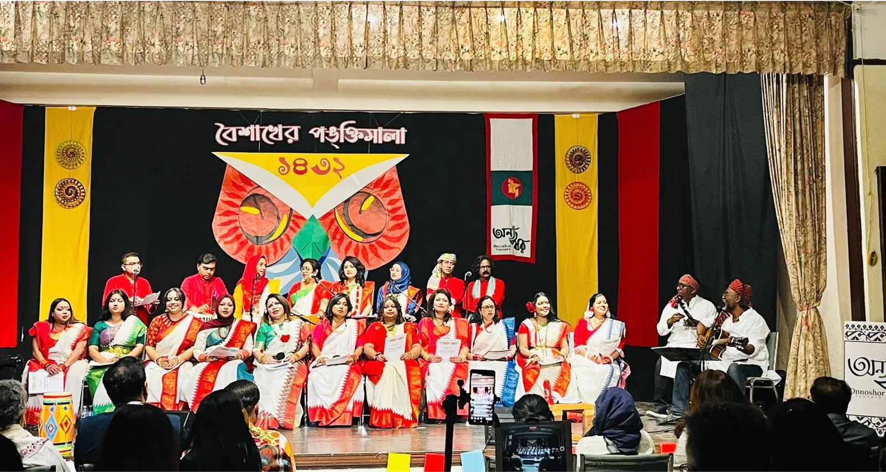
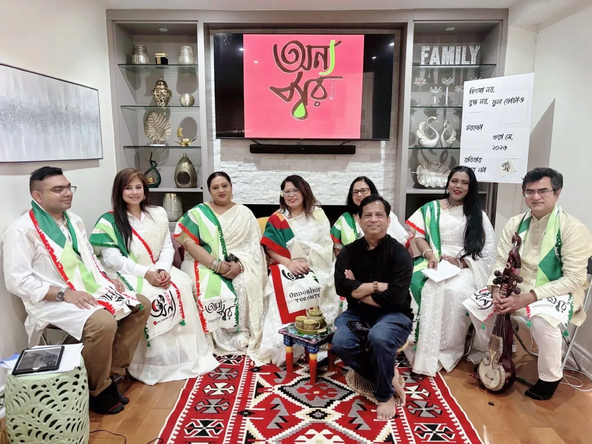
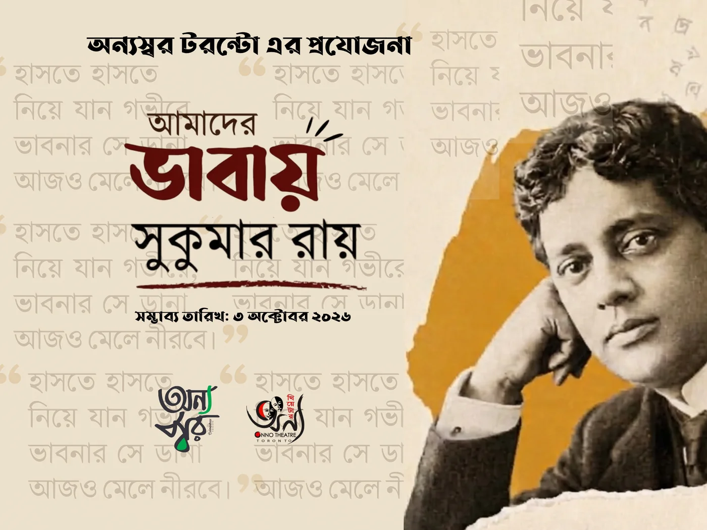
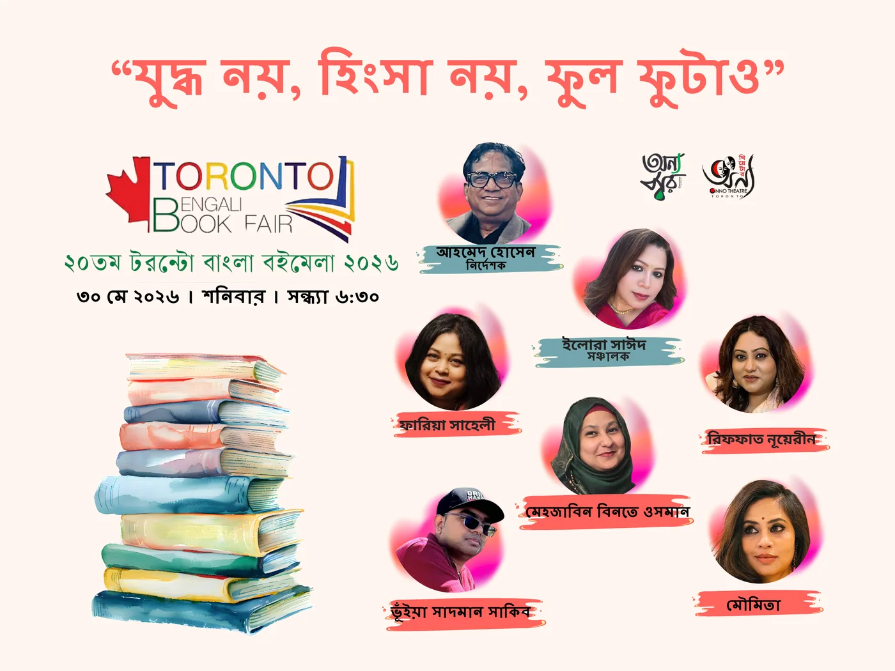
আবৃত্তি, সাহিত্য, সঙ্গীত, নাট্যচর্চা ও সাংস্কৃতিক আয়োজনের নানা কাজে যুক্ত সদস্যদের একত্র পরিচিতি। কিছু প্রোফাইলের ছবি পর্যায়ক্রমে যুক্ত করা হচ্ছে।
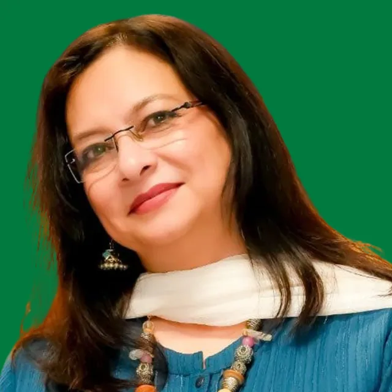
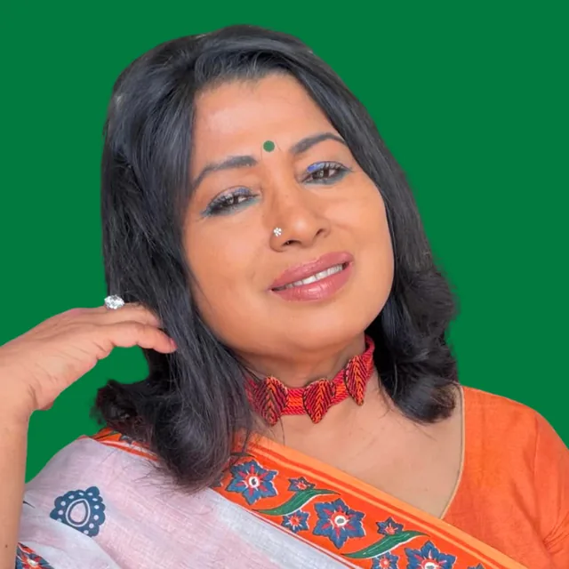
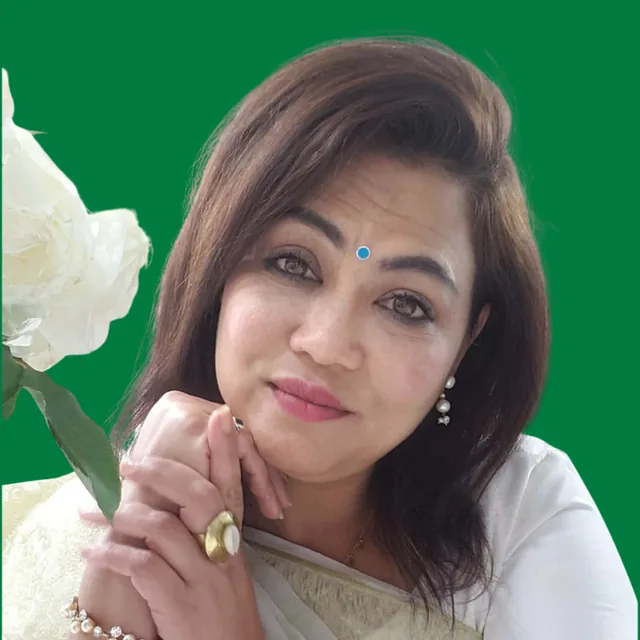
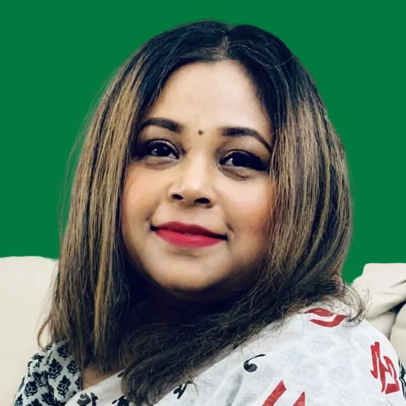
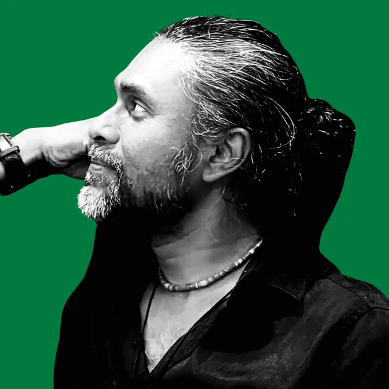
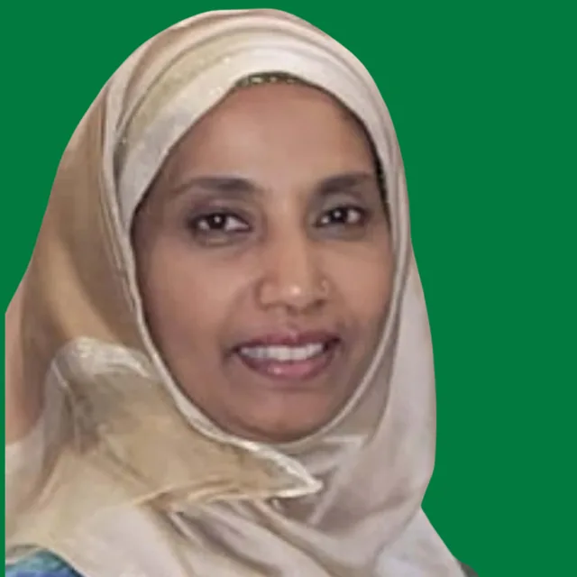
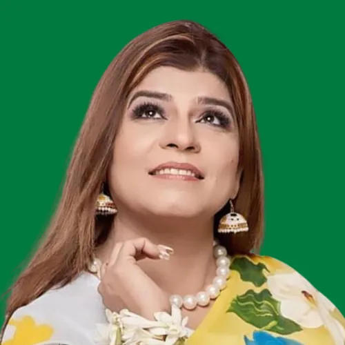
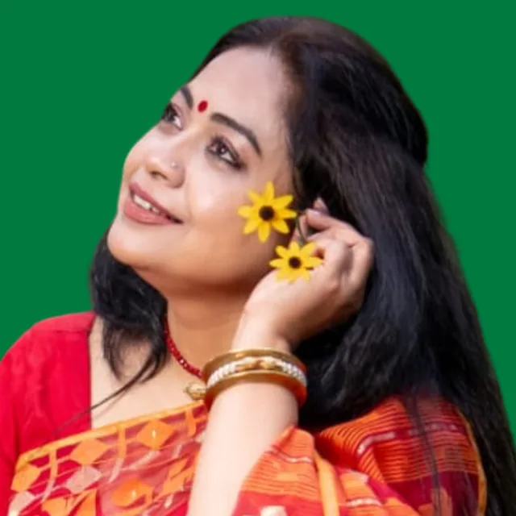
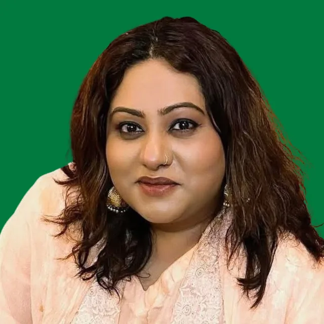
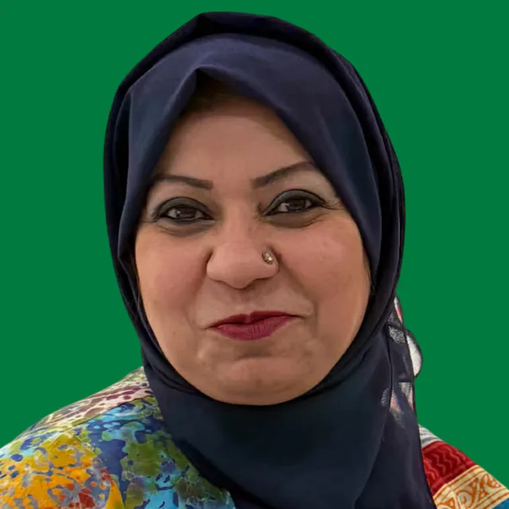
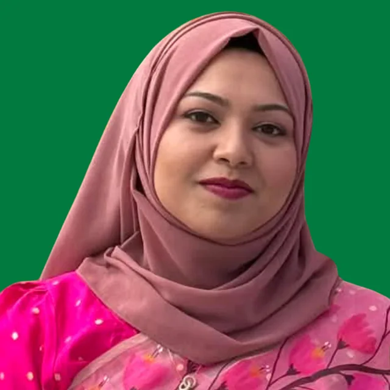
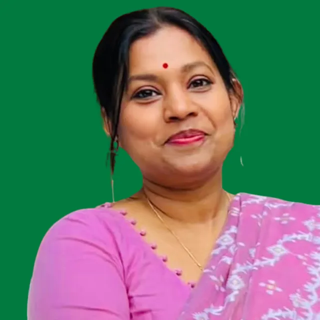
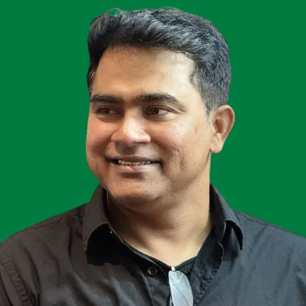
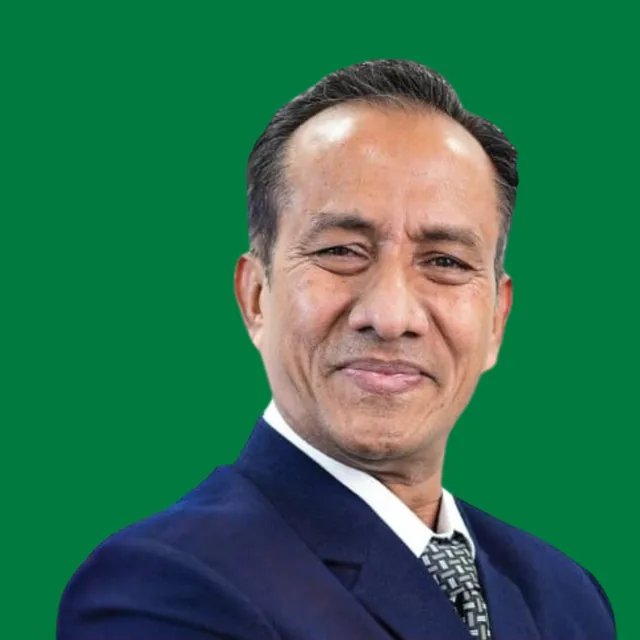
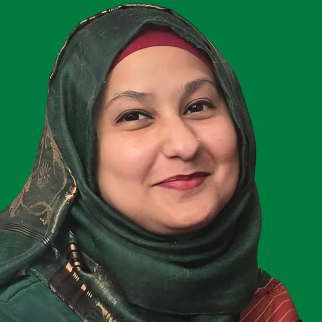
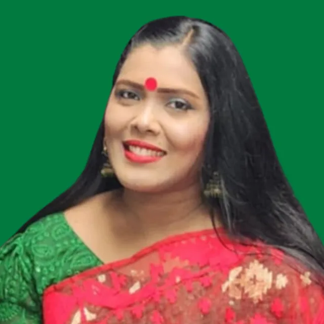
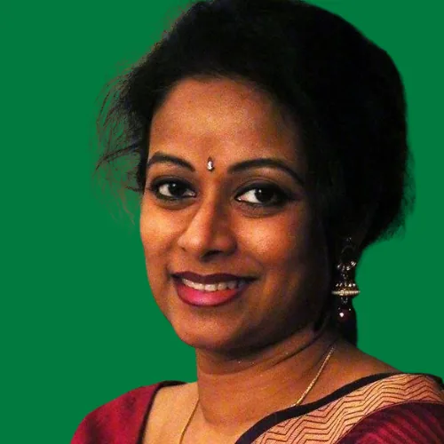
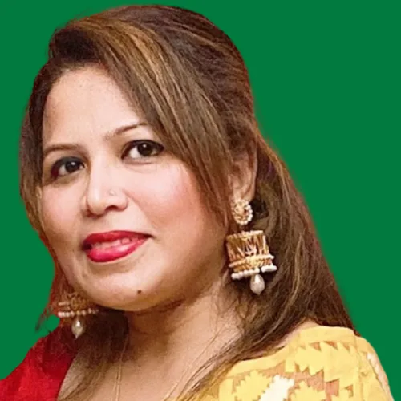
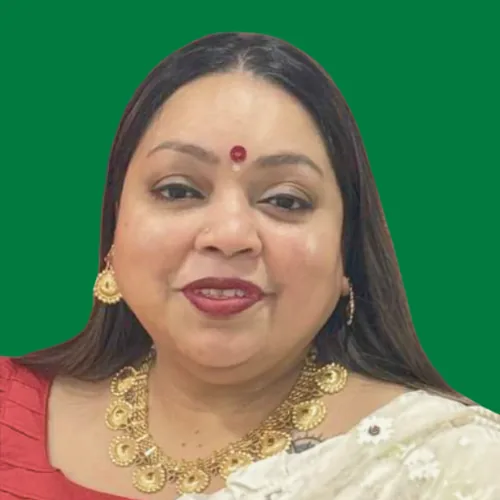
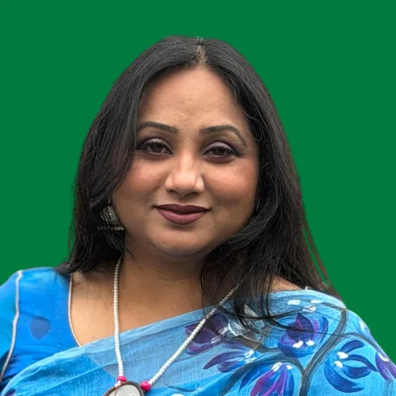
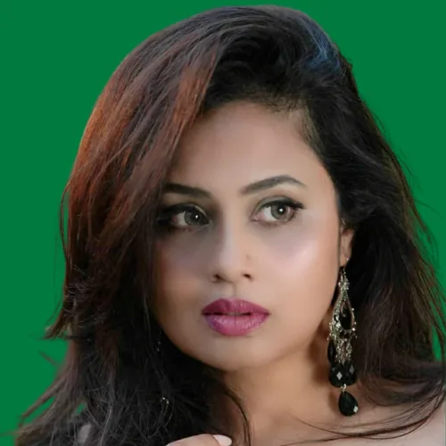
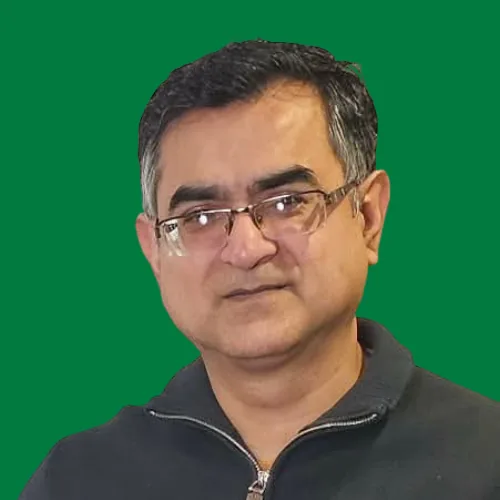
সদস্যপদ, স্বেচ্ছাসেবা, অনুষ্ঠান, শিল্পী অংশগ্রহণ অথবা সহযোগিতার বিষয়ে আমাদের সঙ্গে সরাসরি যোগাযোগ করুন।